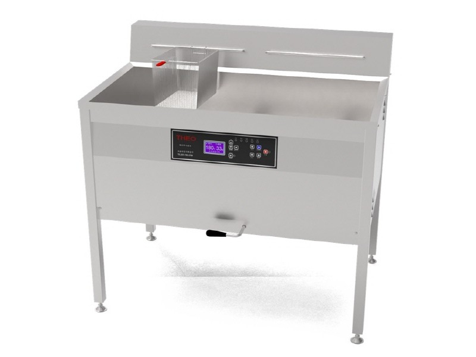
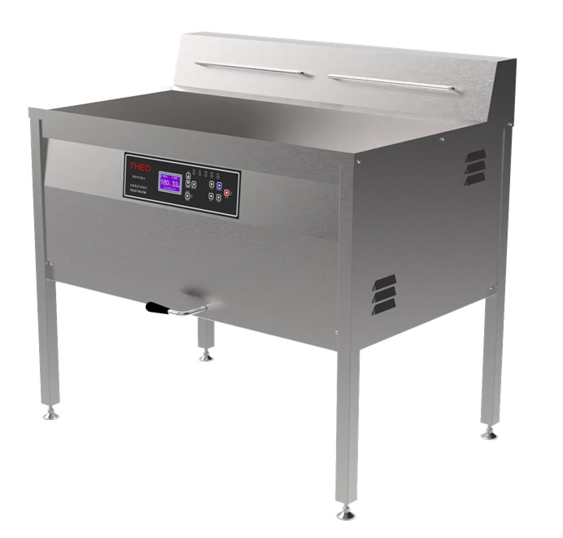
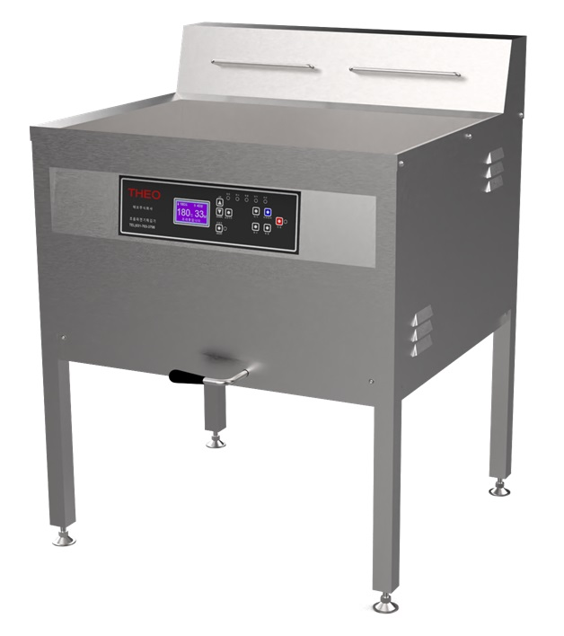
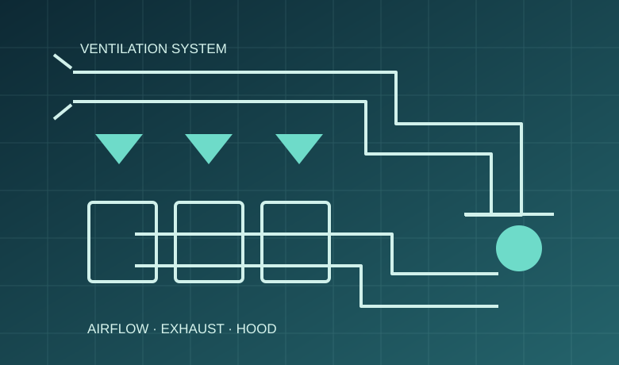

THEO · ELECTRIC
TUEF-600
제조사 제공 대표사진
초음파·와류·버블을 이용한 조리기능을 소개하는 전기식 튀김기입니다. 아래 수치는 제조사 보관 제품소개 원문 기준입니다.
외형 크기600 × 750 × 905 mm
소비전력10.5 kW
전원3N AC 380 V (60 Hz)
기름량최대 36 L
테오주식회사의 제품소개 원문과 한빛산업 보관 원본 사진을 바탕으로 구성한 전기식 튀김기 안내입니다.
TUEF-600·1100의 모델별 설치 사양을 확인했으며, TUEF-800은 사진이 확인된 별도 모델로 구분했습니다.

제조사 제공 대표사진
초음파·와류·버블을 이용한 조리기능을 소개하는 전기식 튀김기입니다. 아래 수치는 제조사 보관 제품소개 원문 기준입니다.

상부 후드 옵션
대량 조리용 모델로, 제조사는 유증기 발생 억제를 고려한 기술을 소개합니다. 실제 억제율 등 정량 효과는 별도 검증이 필요합니다.

실물사진 확인 · 상세 사양 확인 필요
구글드라이브에 ‘TUEF-800 전기식 45도 각도’ 제품사진이 별도 보관돼 있습니다. 기존 TUEF-600/1100 제품소개서에는 이 모델의 세부 규격이 없어 사양 표기는 보류합니다.
튀김기 도입에는 전원 인입 용량, 조리실 환기·후드, 방화 및 관리 동선, 급배수 조건 확인이 중요합니다.

자료 근거: 테오주식회사 「프리미엄 초음파 전기 튀김기(TUEF-1100 / 600)」 보관 제품소개 HTML 및 원본 실물사진. 수치와 세부 구성은 제조사 자료 작성 시점 기준이며 제품 공급 여부와 최신 사양은 별도 확인해야 합니다.
← 제품 카탈로그로 돌아가기